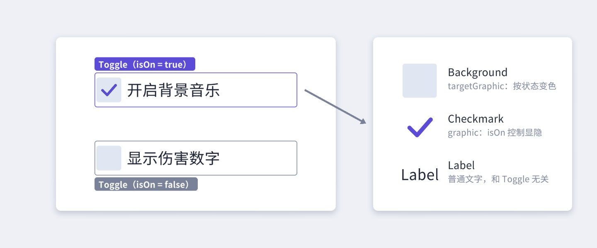
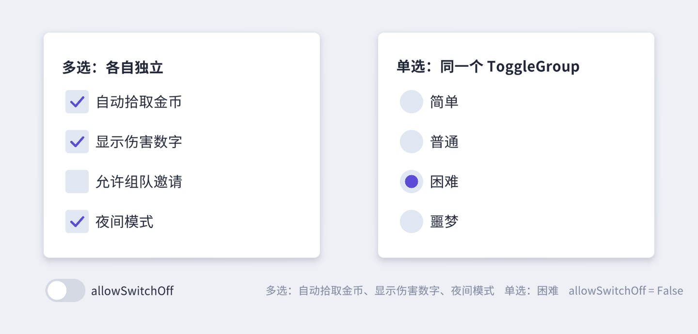
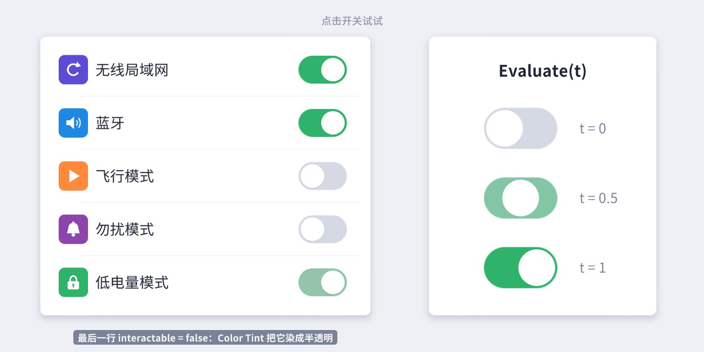
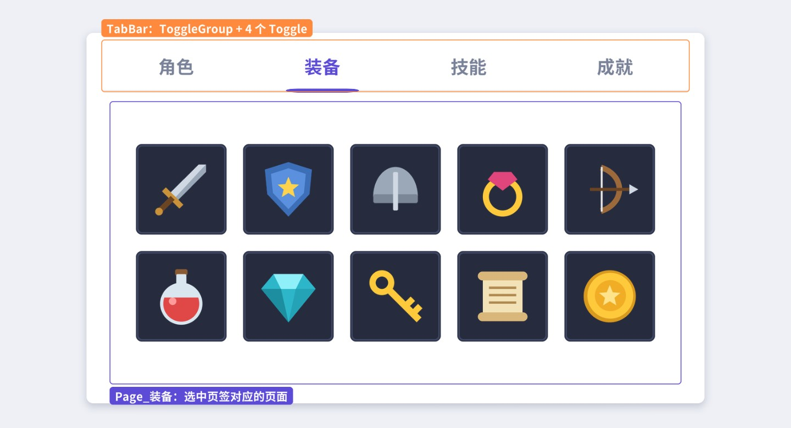
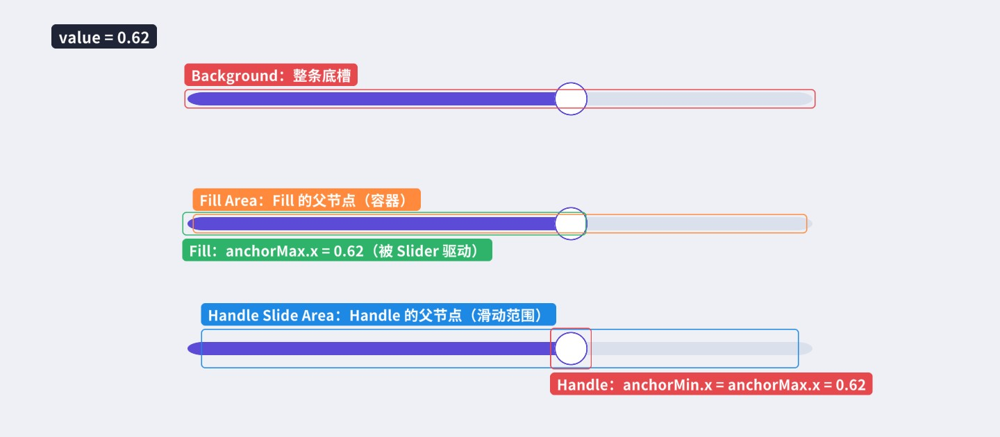
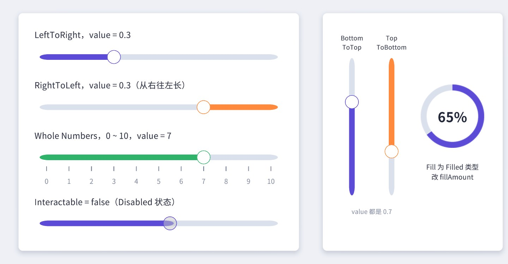
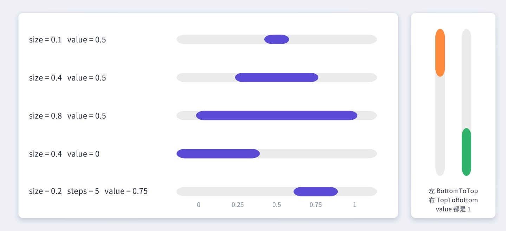
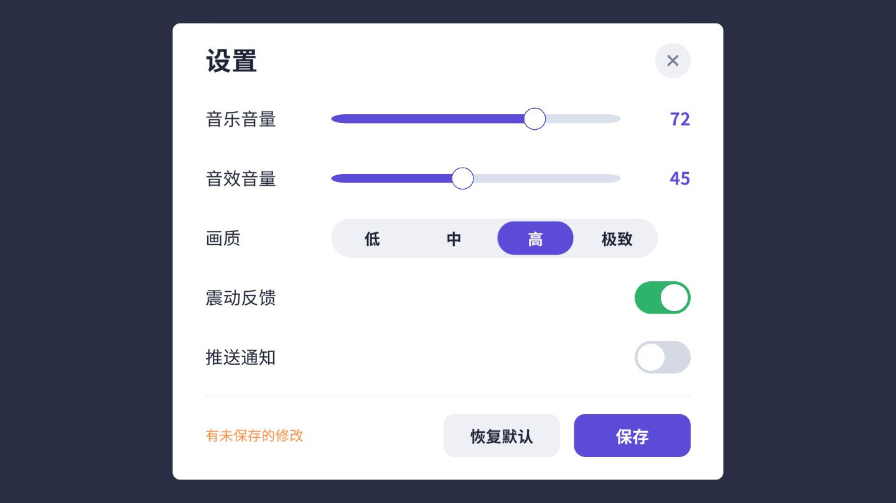
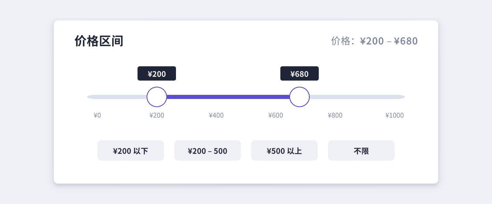
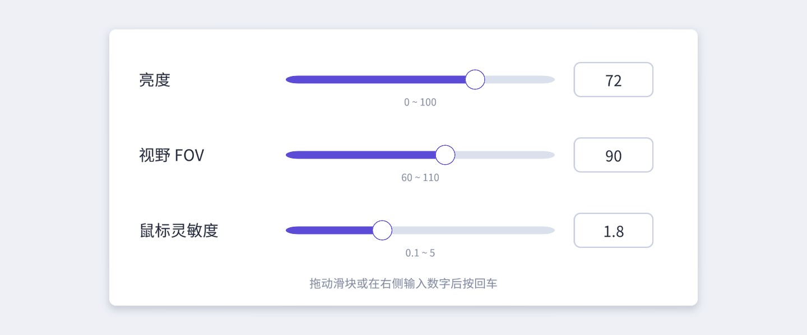

按钮只有“按一下”这一种语义，而游戏里大量设置项需要“记住一个状态”或“在一个范围里取值”。这一章的三个控件——Toggle、Slider、Scrollbar——都继承自 Selectable，套路相同：几个子节点负责显示，控件本身负责把一个值“画”到子节点上。把这个套路看懂，你就能照着它写出 UGUI 没有内置的控件。
Toggle（开关、复选框）表示一个布尔状态：开或关。它在 UGUI 里的实现非常朴素——Toggle 组件本身不画任何东西，它只记住一个 bool，然后去控制一张“对勾”图片的显隐。先在编辑器里建一个看看：
Toggle 物体，可以看到三个子节点：Background、它下面的 Checkmark，以及 Label。Toggle，在 Inspector 里反复勾选 / 取消 Is On，观察 Scene 视图中对勾的出现和消失。菜单创建的 Toggle 内部调用的是 DefaultControls.CreateToggle，本书配套工程的 UIKit.Toggle() 也调用同一个方法，只是把精灵、尺寸换成了更适合 1920×1080 画布的样子，并把 Label 上的旧版 Text 换成了 TextMeshPro（Unity 2022.3 的 菜单目前仍然用旧版 Text 作标签，TMP 没有提供专门的 Toggle 菜单项，自己替换即可）。下面是它的层级：

理解这三个节点各自的“身份”很重要：
targetGraphic（继承自 Selectable 的字段）。鼠标悬停、按下、禁用时，Color Tint 过渡改变的是它的颜色，和第 6 章的 Button 完全一样。
Checkmark被赋给 Toggle 自己的 graphic 字段。isOn 为 true 时它不透明，为 false 时透明。注意它是 Background 的子节点，所以总是画在方框之上。
Label和 Toggle 组件没有任何引用关系，只是恰好放在旁边。点文字能不能切换开关，取决于它的 Raycast Target，见下文。
为什么点击文字也能切换？Toggle 实现了 IPointerClickHandler，事件系统会从射线命中的那个 Graphic 开始往上找第一个能处理点击的组件（第 11 章细讲冒泡）。Label 上的 Text 默认开着 Raycast Target，命中 Label 后往上找到父节点的 Toggle，于是切换。反过来，如果你把 Label 的 Raycast Target 关掉，点文字就没反应了——这常常是“复选框只能点方框”这类 bug 的原因。UIKit.Text 默认关掉了文字的 Raycast Target，所以配套工程里的 Toggle 只能点方框；想让整行都可点，可以在根节点加一张透明的 Image 当点击区域。
新手常犯的一个设计错误是用 Button 做开关：点击时自己翻转一个 bool、再手动换图片。这样做丢掉了很多东西——没有统一的“当前状态”可供读取，无法加入 ToggleGroup，读档时没有“只改显示不发事件”的方法，手柄的确认键行为也要自己写。判断标准很简单：控件需要“记住”一个状态，就用 Toggle；只是触发一次动作，就用 Button。“静音”是状态，用 Toggle；“播放下一首”是动作，用 Button。即使外观完全不像复选框（比如一个喇叭图标，开着时显示喇叭、关着时显示带斜杠的喇叭），也应该用 Toggle：把两张图分别作为 Background 和 Checkmark 叠放，Checkmark 显示时盖住底图即可，一行代码都不用写。
Toggle 的 Inspector 上半部分是 Selectable 的公共字段（Interactable、Transition、Navigation，见第 6 章），下半部分是它自己的：
isOn。
Toggle TransitionNone 或 Fade。Fade 时 Checkmark 用 0.1 秒淡入淡出；None 时瞬间切换。
Graphic随状态显隐的那张图，默认就是 Checkmark。可以留空——留空后 Toggle 不再改任何画面，本章的 iOS 开关就利用了这一点。
Group所属的 ToggleGroup。设置后同组的 Toggle 互斥（单选），见 7.3 节。
On Value Changed (Boolean)状态改变时的事件，参数是新的 isOn。
isOn 的 setter 最终调用私有方法 Set。这段代码很短，但几乎所有 Toggle 相关的“怪现象”都能从这里找到答案：
// 摘自 com.unity.ugui 1.0.0 Runtime/UI/Core/Toggle.cs
public void SetIsOnWithoutNotify(bool value)
{
Set(value, false);
}
void Set(bool value, bool sendCallback = true)
{
if (m_IsOn == value)
return;
// if we are in a group and set to true, do group logic
m_IsOn = value;
if (m_Group != null && m_Group.isActiveAndEnabled && IsActive())
{
if (m_IsOn || (!m_Group.AnyTogglesOn() && !m_Group.allowSwitchOff))
{
m_IsOn = true;
m_Group.NotifyToggleOn(this, sendCallback);
}
}
PlayEffect(toggleTransition == ToggleTransition.None);
if (sendCallback)
{
UISystemProfilerApi.AddMarker("Toggle.value", this);
onValueChanged.Invoke(m_IsOn);
}
}
逐句看：
isOn = true 只会触发一次回调。PlayEffect 负责显隐 graphic：运行时调用 graphic.CrossFadeAlpha，编辑模式下直接 canvasRenderer.SetAlpha。注意它改的是 CanvasRenderer 的 alpha，不是 Image.color，所以你在 Inspector 里看到 Checkmark 的 Color 一直是不透明的，这是正常的。sendCallback 为 false 时不发事件——这就是 SetIsOnWithoutNotify 的实现。规则很简单：“用户操作”用 isOn，“程序同步显示”用 SetIsOnWithoutNotify。典型场景是读档：打开设置界面时从存档里读出“震动 = 开”，要把开关拨到开的位置。如果用 isOn = true，onValueChanged 会被触发，而你给它挂的回调多半是“保存设置 + 播放音效 + 发统计”，结果界面一打开就保存了一次、响了一声、上报了一条“用户打开了震动”。Slider、Scrollbar、Dropdown、InputField 都有同样的 SetValueWithoutNotify / SetTextWithoutNotify，道理相同。
Rebuild(CanvasUpdate) 里有一段 #if UNITY_EDITOR 代码：在 Prelayout 阶段调用 onValueChanged.Invoke(m_IsOn)。它配合 OnValidate 使用，目的是让你在 Inspector 里改 Is On 时，绑定的持久化回调（Inspector 里拖的那种）立即生效、便于预览。副作用是：如果你在 Inspector 里给 On Value Changed 绑了会改场景数据的方法，不进 Play 模式改一下 Is On 也会执行它。Slider 和 Scrollbar 有完全一样的机制。复选框之间互不相干；单选框（Radio Button）同一组里只能选一个。UGUI 的做法是给几个 Toggle 指定同一个 ToggleGroup：
Group，挂上 。Group 物体拖到 Inspector 的 Group 字段里。外观上，单选框习惯用圆形。配套工程里把 Background 和 Checkmark 的精灵都换成圆，就得到了图 7-2 右边的样子。

ToggleGroup 的源码只有不到两百行，核心是 NotifyToggleOn：
// 摘自 com.unity.ugui 1.0.0 Runtime/UI/Core/ToggleGroup.cs
public void NotifyToggleOn(Toggle toggle, bool sendCallback = true)
{
ValidateToggleIsInGroup(toggle);
// disable all toggles in the group
for (var i = 0; i < m_Toggles.Count; i++)
{
if (m_Toggles[i] == toggle)
continue;
if (sendCallback)
m_Toggles[i].isOn = false;
else
m_Toggles[i].SetIsOnWithoutNotify(false);
}
}
也就是说，一次“点选第 3 项”实际上会产生一连串回调。把图 7-3 记在心里，写单选逻辑时就不会踩坑：
GetFirstActiveToggle() / ActiveToggles() 去查。另外，Toggle 只有在启用状态下才会注册进组（OnEnable 里注册、OnDisable 里注销），隐藏起来的 Toggle 不参与互斥。配套场景的 ToggleGroupDemo 演示了第 3 点——监听组内所有成员，再用 GetFirstActiveToggle 读出结果：
allowSwitchOff 打开后，点击已选中的项会把它关掉，组里允许没有任何选中项，此时 GetFirstActiveToggle() 返回 null。“筛选条件：全部 / 只看武器 / 只看防具，再点一次取消筛选”就是这种交互。
目标：做一个胶囊形轨道 + 圆形滑块的开关，点击时滑块平滑地滑到另一侧，轨道颜色从灰渐变到绿。
思路：不要重新发明 Toggle。点击、键盘提交（Submit）、导航、Interactable、ToggleGroup、onValueChanged 这些 Toggle 都已经做好了，我们只是不喜欢它“淡入淡出一个对勾”的表现。所以保留 Toggle 组件，把它的 graphic 设为空（Toggle 就不再碰任何画面），再写一个小组件读取 isOn，自己负责画滑块和轨道。这是扩展 UGUI 控件最常用、也最稳妥的思路：逻辑交给原生控件，表现自己接管。

Evaluate(t) 直接画出层级结构如下。轨道 Track 同时是 Toggle 的 targetGraphic，所以悬停、按下、禁用时的 Color Tint 照常生效；滑块 Knob 是个空节点，下面放阴影和白色圆面——阴影必须是滑块的子节点，才能跟着滑块一起移动，而且要排在圆面之前，才会被画在圆面下面。
几个关键点：
Time.unscaledDeltaTime。暂停菜单通常会把 Time.timeScale 设为 0，如果用 deltaTime，暂停界面里的开关就永远动不了。这条规则适用于几乎所有 UI 动画。Evaluate(t)。动画只负责推进 t，画面完全由 t 决定。这样做的好处是：编辑器里可以预览任意中间帧，截图、单元测试都能直接调用它。本书配图就是在批处理模式下（不进 Play 模式、Update 不运行）调用 Evaluate(0.5f) 画出图 7-4 右边中间那个“半路上”的开关的。轨道宽 − 滑块宽 − 2 × 边距，用 rect.width 实时计算，而不是写死像素值，所以开关可以随意缩放。pill 精灵九宫格边距是 32 像素，开关高度超过 64 时，把 Image 的 Pixels Per Unit Multiplier 调成 64 / 高度，边框就会按比例放大（第 4 章讲过这个参数）。想要“按下时滑块变宽”的 iOS 细节，可以在组件里实现 IPointerDownHandler / IPointerUpHandler，按下时把 Knob 的宽度加大一点。目标：角色界面顶部有“角色 / 装备 / 技能 / 成就”四个页签，点哪个就显示哪一页；选中的页签文字变成主题色，下方有一条指示条跟过去。
思路：页签就是“单选”。四个 Toggle 放进同一个 ToggleGroup，allowSwitchOff 保持 false（页签必须有且只有一个选中），每个 Toggle 对应一个页面物体，选中谁就激活谁、隐藏其余。

页签的 Toggle 不需要对勾，graphic 留空即可；背景是一张全透明的 Image，只用来接收点击。注意四个页签用锚点平分宽度（第 i 个页签的 anchorMin.x = i/4、anchorMax.x = (i+1)/4），而不是用 HorizontalLayoutGroup——布局组的位置要等到这一帧的布局重建后才确定，Start 里立刻去读页签位置来摆指示条会读到旧值；锚点算出来的位置则随时有效（这个“布局延迟一帧”的问题第 10 章还会细讲）。
循环里给每个 Toggle 加监听时，int index = i; 这一行绝对不能省。C# 的 lambda 捕获的是变量而不是值，for 循环里所有 lambda 捕获的是同一个 i，等到点击时循环早已结束，i 的值是 4，四个页签都会去打开不存在的第 5 页。这就是第 6 章提过的“闭包陷阱”，在页签、列表这类场景里出现频率极高。
Select 做成公开方法，因为业务里经常需要“用代码切页”：比如领取奖励后自动跳到背包页。它的第一行处理了一个递归：如果目标页签还没勾上，就只设置 isOn = true 然后返回——这会通过 onValueChanged 再次进入 Select，这次 isOn 已经为 true，才真正去切页面。这样无论从点击进来还是从代码进来，都只走一条路径，状态不会不同步。
SetActive 切换页面，最简单也最常用。页面很重（例如带大量列表项）时，SetActive(true) 会触发整个子树的 OnEnable 和重建，可能卡一帧；可以改为第一次打开时才实例化页面、之后只切换显隐，或者用 CanvasGroup 的 alpha + blocksRaycasts 隐藏。各种隐藏方式的开销对比见第 20 章。扩展方向：页签上的红点提示（有新装备时在“装备”页签右上角显示一个小圆点）是常见需求。红点应当由数据驱动——背包数据变化时发事件，红点组件监听后决定显隐——而不是在打开页签的地方手动去关，第 16 章的事件中心会实现这一套。另一个常见需求是“锁定”某个页签（等级不够不能进），把对应 Toggle 的 interactable 设为 false 即可，ToggleGroup 不会选中一个不可交互的 Toggle 吗？会的——用代码设置 isOn 不检查 interactable，只有点击才检查（InternalToggle 里的 IsInteractable()），所以代码切页时自己要先判断。
Slider（滑动条）在 [minValue, maxValue] 区间里取一个 float。用菜单 创建后，层级如下（配套工程额外在 Handle 下加了一个描边圆环 Ring，这里隐藏掉）：

和 Toggle 一样，Slider 组件本身不画东西，它只做一件事：把 value 换算成 0～1 的比例，然后改 Fill 和 Handle 的锚点。这正是 Slider 最值得读的一段源码：
// 摘自 com.unity.ugui 1.0.0 Runtime/UI/Core/Slider.cs（UpdateVisuals，略去编辑器分支）
m_Tracker.Clear();
if (m_FillContainerRect != null)
{
m_Tracker.Add(this, m_FillRect, DrivenTransformProperties.Anchors);
Vector2 anchorMin = Vector2.zero;
Vector2 anchorMax = Vector2.one;
if (m_FillImage != null && m_FillImage.type == Image.Type.Filled)
{
m_FillImage.fillAmount = normalizedValue;
}
else
{
if (reverseValue)
anchorMin[(int)axis] = 1 - normalizedValue;
else
anchorMax[(int)axis] = normalizedValue;
}
m_FillRect.anchorMin = anchorMin;
m_FillRect.anchorMax = anchorMax;
}
if (m_HandleContainerRect != null)
{
m_Tracker.Add(this, m_HandleRect, DrivenTransformProperties.Anchors);
Vector2 anchorMin = Vector2.zero;
Vector2 anchorMax = Vector2.one;
anchorMin[(int)axis] = anchorMax[(int)axis] = (reverseValue ? (1 - normalizedValue) : normalizedValue);
m_HandleRect.anchorMin = anchorMin;
m_HandleRect.anchorMax = anchorMax;
}
把它翻译成人话（以默认的 LeftToRight 为例）：
fillAmount。这让你可以用环形（Radial 360）图片做圆形进度条，图 7-7 右边就是这样做的。m_Tracker.Add(..., DrivenTransformProperties.Anchors) 把 Fill 和 Handle 的锚点标记为“被驱动”。在 Inspector 里你会看到它们的锚点字段变灰、不可编辑，并显示“Some values driven by Slider”——这不是 bug，改也改不动，因为下一次 UpdateVisuals 就会覆盖。这也解释了 DefaultControls 里那几个看似随意的数字：Fill Area 的 sizeDelta.x 是 −20（左右各缩 10），Handle Slide Area 也是 −20，而默认 Handle 宽 20——两个容器都内缩了半个 Handle 宽。你换了更大的滑块精灵，就要同步调大这两个容器的内缩量，否则滑块在两端会“出界”。配套工程的 UIKit.Slider 按 Slider 高度自动算这些值。
SetDirection(dir, true) 还会顺带翻转整个层级的 RectTransform 布局（横竖互换），菜单里切换方向时 Unity 调的就是它。
Min Value / Max Value取值范围。
Whole Numbers勾选后 value 四舍五入为整数，键盘方向键每次加减 1。
Value当前值。setter 内部会 Clamp 到范围内（Whole Numbers 时再取整），值没变就不发事件。
On Value Changed (Single)值改变时触发。拖动过程中每帧都会触发，回调里不要做存档、网络请求这类重活。

点击 Slider 的空白处，滑块会瞬间跳到点击位置；可如果按在滑块本身上再拖，滑块不会先跳一下让中心对准手指，而是保持按下时的相对位置。这个细节在 OnPointerDown 里：
// 摘自 com.unity.ugui 1.0.0 Runtime/UI/Core/Slider.cs
m_Offset = Vector2.zero;
if (m_HandleContainerRect != null && RectTransformUtility.RectangleContainsScreenPoint(m_HandleRect, eventData.pointerPressRaycast.screenPosition, eventData.enterEventCamera))
{
Vector2 localMousePos;
if (RectTransformUtility.ScreenPointToLocalPointInRectangle(m_HandleRect, eventData.pointerPressRaycast.screenPosition, eventData.pressEventCamera, out localMousePos))
m_Offset = localMousePos;
}
else
{
// Outside the slider handle - jump to this point instead
UpdateDrag(eventData, eventData.pressEventCamera);
}
按在滑块上时记下“手指相对滑块中心的偏移”，之后拖动计算位置时减掉它；按在别处则直接跳过去。另外 Slider 实现了 IInitializePotentialDragHandler，在里面把 useDragThreshold 设为 false——普通控件要拖动超过 EventSystem 的 Drag Threshold（默认 10 像素）才算开始拖拽，而滑块应当“一按就跟手”。本章案例 7.5 的双滑块也照抄了这一手。
Scrollbar（滚动条）长得像 Slider，但含义不同：它表示“在一段更长的内容里，你现在看的是哪一部分”。所以它多了一个 Slider 没有的概念——size，即滑块占整条轨道的比例，对应“可见部分占全部内容的比例”。结构比 Slider 简单：根节点自己带 Image 当轨道，下面一个 Sliding Area，再下面是 Handle。

滑块位置的计算在 UpdateVisuals 里，只有几行：
// 摘自 com.unity.ugui 1.0.0 Runtime/UI/Core/Scrollbar.cs
float movement = Mathf.Clamp01(value) * (1 - size);
if (reverseValue)
{
anchorMin[(int)axis] = 1 - movement - size;
anchorMax[(int)axis] = 1 - movement;
}
else
{
anchorMin[(int)axis] = movement;
anchorMax[(int)axis] = movement + size;
}
滑块的锚点区间长度永远是 size，能移动的范围是 1 − size。value = 0 时滑块贴在起点，value = 1 时贴在终点，和 Slider 一样，Handle 的锚点同样是“被驱动”的。和 Slider 不同的是，Scrollbar 的 Handle 两个锚点是分开的——它的长度由锚点决定，不是固定像素。
SetValueWithoutNotify 可以只改位置不发事件。
Size0～1，滑块长度占比。配合 ScrollRect 使用时由 ScrollRect 自动设置为“视口 / 内容”。
Number Of Steps0～11。大于 1 时 value 被量化成这么多档（读取 value 时取整，见下）。0 和 1 表示连续。
On Value Changed (Single)值改变时触发。
numberOfSteps 的实现很有意思：它不改存储的 m_Value，而是在 getter 里量化：Mathf.Round(val * (steps - 1)) / (steps - 1)。所以拖动时内部值是连续的，只是对外表现为跳档。点击滑块以外的轨道时，Scrollbar 会以 size 为步长“翻页”，并且按住不放会持续翻（源码里的 ClickRepeat 协程），和桌面系统滚动条的行为一致。
举一个具体的数：内容高 2000 像素、视口高 500 像素，size = 500 / 2000 = 0.25，滑块占轨道的四分之一；当前滚到正中间时，value = 0.5，anchorMin = 0.5 × 0.75 = 0.375，anchorMax = 0.625，滑块正好居中。内容越长，size 越小，滑块越短——这就是为什么聊天记录越多，滚动条越细。size 太小时滑块会短得难以按住，很多项目会给它设一个最小长度：Scrollbar 本身不支持，可以在 Handle 上用 sizeDelta 给锚点区间之外再加固定的像素长度（DefaultControls 默认就给了 20 像素），或者干脆在 ScrollRect 的 onValueChanged 里自己重算。
目标：做一个标准的游戏设置面板——两个 0～100 的音量滑块（右边实时显示数值）、四档画质的分段选择器、震动和推送两个开关，以及“恢复默认 / 保存”按钮。修改后提示“有未保存的修改”，保存时写入 PlayerPrefs，下次打开自动读回。

编辑器里的搭建步骤：
Min Value = 0、Max Value = 100、勾选 Whole Numbers。右侧各放一个 TMP 文字显示数值。Toggle Group，下面放 4 个 Toggle，锚点把宽度四等分；每个 Toggle 的 Checkmark 拉伸铺满、换成实心胶囊图，Label 居中。SettingsPanel 脚本，把各个引用拖进去。分段选择器有一个小问题：选中项是实心的主题色，文字应该变白，但 Toggle 只会淡入淡出一个 graphic，管不到文字颜色。为此写一个通用小组件，每帧比较一次 isOn，状态变了就换颜色：
为什么不监听 onValueChanged？因为 ToggleGroup 用 SetIsOnWithoutNotify 静默关闭其他成员时（读档时就会走这条路），被关掉的那个不会收到回调，文字会停留在白色。每帧比较一个 bool 的开销可以忽略不计，换来的是在任何情况下都正确。
设置面板的主体脚本分三段看。第一段是绑定：
注意分工：拖动滑块时只更新数字、实时应用音量（玩家需要边拖边听效果），并标记“有修改”；真正写盘留给“保存”按钮。onValueChanged 在拖动中每帧都触发，如果每帧都 PlayerPrefs.Save()，在某些平台上会产生频繁的磁盘写入。
读档是本案例的重点：全部使用 WithoutNotify 系列方法，所以打开界面不会触发“有未保存的修改”。画质那一行只调用了 m_Quality[quality].SetIsOnWithoutNotify(true)——打开目标项后，ToggleGroup 会用 SetIsOnWithoutNotify(false) 关掉其他成员，正好也不发通知。这里如果写成“循环把每一项设为 i == quality”，当前选中项排在目标项前面时，关它那一步会被组拒绝（7.3 节的第 2 个细节），虽然最终结果碰巧正确，但逻辑上依赖了遍历顺序，不要这么写。
AudioListener.volume，而是改 AudioMixer 上“音乐”“音效”分组暴露的参数，并且要把 0～1 的线性值换算成分贝（例如 20 * Mathf.Log10(v)），否则滑块前半段几乎听不出变化。② “恢复默认”最好先弹确认框（第 16 章）。③ 设置项多了以后，可以把每一行做成预制体，用数据驱动生成。目标：加载界面底部有一条进度条，显示百分比和当前阶段说明；进度要平滑前进，不能一下跳满，也不能倒退。
思路：进度条用 Slider 实现最省事——Fill 随 value 伸缩的逻辑现成可用。做成只读要处理三件事：删掉 Handle Slide Area（并把 Handle Rect 置空）；关闭交互；让进度“追”着目标值走。
SetProgress(p) 设置目标，显示值在 Update 里用 MoveTowards 以固定速度追上去。这样即使真实进度从 10% 一下跳到 90%，玩家看到的也是平滑增长。SetValueWithoutNotify，进度条通常没人监听它的事件，用它可以省掉一次无意义的事件调用。配套场景用一组“假任务”模拟加载；真实项目里接异步加载场景时，有一个必须知道的细节：
allowSceneActivation = false 时，AsyncOperation.progress 最多只走到 0.9，剩下 0.1 代表“激活场景”这一步，要等你把 allowSceneActivation 设回 true 才会完成。所以显示时要除以 0.9，否则进度条永远停在 90%。等显示值也走到 100% 再激活场景，可以避免“进度条还在 70% 画面就切走了”的突兀感。
目标：商城筛选里的“价格区间”——一条轨道上两个滑块，分别表示最低价和最高价，中间的高亮段表示选中区间；两个滑块不能交叉，并保持一个最小间隔；数值按 10 元吸附。

思路：两个 Slider 叠在一起可以勉强实现，但两个控件抢同一片点击区域，交互很别扭。更好的办法是照着 7.4 节读到的 Slider 原理，自己写一个控件：
Slider.UpdateVisuals 一模一样的手法。IPointerDownHandler 和 IDragHandler。按下时把屏幕坐标换算成滑动区域内的 0～1 比例，选离得近的那个滑块作为“当前拖的滑块”，之后拖动只改它。值得注意的几处：
[ExecuteAlways] + OnValidate：在 Inspector 里改 Low / High 时立即刷新画面，编辑时就能看到效果。OnInitializePotentialDrag 里关掉拖拽阈值，理由同 Slider。e.pressEventCamera。Screen Space - Overlay 画布下它是 null，Camera 和 World Space 画布下是对应的相机，直接把事件里的相机传给 ScreenPointToLocalPointInRectangle 就能兼容所有画布模式（第 3 章）。HitArea 图片作为点击区域——轨道只有 16 像素高，手指很难按准。区间文字和快捷按钮放在单独的 PriceRangeDemo 里，通过 onValueChanged 刷新——控件只负责“取值”，不关心值拿去显示什么，这样它才能在别处复用。
OnMove（参考 Slider.OnMove），再加一个“当前焦点在哪个滑块”的状态。这留作本章练习。目标：亮度、视野、灵敏度这类设置，既能拖滑块粗调，也能在右侧输入框里输入精确数字。拖滑块时输入框数字跟着变；输入数字回车后滑块跳过去；超出范围的输入被自动纠正。

“双向同步”的经典陷阱是互相触发：滑块变了去改输入框，输入框变了又去改滑块，滑块又变了……即使不至于死循环，也会出现“正在输入 120，刚敲下 1 滑块就被拽到最左边，输入框又被改回 1”这种体验问题。解决办法是两条原则：
SetTextWithoutNotify，输入框的 onValueChanged 不会被触发，回路在这里断开。onEndEdit 而不是 onValueChanged：用户按回车或点到别处时才提交（输入框的事件细节见第 8 章）。slider.value，Clamp 和取整交给 Slider 自己——Slider 的 setter 已经实现了这些，不要在外面再写一遍。CultureInfo.CurrentCulture，与 TMP 的 Decimal Number 校验保持一致：在德语、法语等区域设置下小数点是逗号，TMP 放行的是逗号，用 InvariantCulture 解析就会失败。Selectable 的默认行为是：按方向键时把焦点移到相应方向上的下一个控件（第 6 章）。Slider 和 Scrollbar 改写了 OnMove：当方向键与自身轴向一致、并且那个方向上找不到可导航的控件时，改为加减数值。再配合它们重写的 FindSelectableOnLeft/Right/Up/Down——Navigation 为 Automatic 时，横向 Slider 在左右方向上直接返回 null——结果就是：横向滑块上按左右键调值、按上下键换焦点；竖向滑块反过来。这正是手柄操作设置界面时想要的手感。
// 摘自 com.unity.ugui 1.0.0 Runtime/UI/Core/Slider.cs
float stepSize { get { return wholeNumbers ? 1 : (maxValue - minValue) * 0.1f; } }
public override Selectable FindSelectableOnLeft()
{
if (navigation.mode == Navigation.Mode.Automatic && axis == Axis.Horizontal)
return null;
return base.FindSelectableOnLeft();
}
每按一次的步长：Whole Numbers 时是 1，否则是范围的 10%。0～100 的整数音量条每按一次只加 1，手柄玩家要按一百下才能从头到尾——这时可以取消 Whole Numbers、自己在 onValueChanged 里取整，或者继承 Slider 改写 OnMove 换一个步长。如果把 Navigation 改成 Explicit 并指定了左右邻居，方向键就会去切焦点而不再调值，这一点常被忽略。
Toggle 没有改写 OnMove，它响应的是 ISubmitHandler：焦点在 Toggle 上时按“确认”（Standalone Input Module 的 Submit 键，默认是回车 / 手柄 A 键）就会切换，和鼠标点击走同一个 InternalToggle。
手机屏幕上，16 像素高的滑块轨道、40 像素的复选框，用手指几乎按不准。原则是视觉可以小，可点击区域要大。做法有两种：一是像案例 7.5 那样，在根节点放一张全透明的大图当点击区域（透明 Image 照样参与射线检测，只要 Raycast Target 开着）；二是保持图片尺寸不变，用第 4 章提到的“透明边距”扩大精灵。各大平台的设计规范对最小触控尺寸都有建议值，大致相当于指尖的宽度，具体数值以平台文档为准。另外，Slider 关掉了拖拽阈值，手指一碰就会改值——在需要防误触的地方（比如战斗中的灵敏度调节），可以在 OnPointerDown 里记录按下位置，只有拖动超过一定距离才开始改值。
拖动 Slider、Scrollbar 时，onValueChanged 每帧都会触发；ScrollRect 滚动时，它带的两根 Scrollbar 也在每帧更新。这些回调里只做“便宜”的事：改一个数字文字、设置一个音量参数。存档、发网络请求、重建列表这类操作，应该放到拖动结束（实现 IEndDragHandler 或 IPointerUpHandler）或者“保存”按钮里。另一个容易忽视的开销是：Fill 的锚点每帧变化会让它的网格重建（第 12 章会实测各种改动触发的重建类型），一屏几十根同时变化的进度条（例如 MMO 的团队血条）建议放进单独的 Canvas，避免拖累整个界面的合批重建（第 20 章）。
Color.Lerp 在灰色和绿色之间插值。本书工程使用 Gamma 色彩空间，Lerp 直接在 sRGB 数值上线性插值，中间色会比 Linear 空间下的结果略暗、略“脏”一些。对开关这种 0.15 秒的过渡来说肉眼几乎看不出；如果做的是长时间、大面积的颜色渐变（如昼夜天空色），可以先用 color.linear 转到线性空间插值，再用 .gamma 转回。| 现象 | 原因与解决 |
|---|---|
| Toggle 点了没反应，但 isOn 在 Inspector 里能改 | Background 和 Label 的 Raycast Target 都关掉了，射线命中不到任何属于这个 Toggle 的图形；或者上层有透明图片挡住（第 1 章新手五坑）。打开 Background 的 Raycast Target，或加一张透明点击区域。 |
| 对勾在 Scene 里一直显示，运行后才正确 | 编辑模式下 PlayEffect 直接改 CanvasRenderer 的 alpha，而这个值不会被序列化。如果你用代码在编辑器里批量创建 Toggle 又没触发 OnEnable，预览可能和实际不一致；进 Play 模式后 OnEnable / Start 会重新调用 PlayEffect，以运行时为准。 |
| Slider 的 Fill 在 value = 0 时还露出一小截 | Fill 的 sizeDelta.x 不为 0（默认是 10，用来让填充条两端圆头盖住滑块中心）。value = 0 时锚点宽度为 0，但 sizeDelta 仍撑出 10 像素。想完全消失，可以在 onValueChanged 里 value 为 0 时关闭 Fill 的 Image，或把 Fill 换成 Filled 类型。 |
| 拖动 Slider 时 Fill 和 Handle 对不齐 | Fill Area 与 Handle Slide Area 的内缩量不同。按图 7-7 的规则，两者都应内缩半个 Handle 宽（Fill 再按需外扩 offset）。 |
| 改了 minValue / maxValue 后 value 变了 | 这两个属性的 setter 会立即用新范围重新 Clamp 当前值，并且可能触发 onValueChanged。初始化时先设范围、再设值；需要静默就在设置完范围后再 SetValueWithoutNotify 一次。 |
| Scrollbar 拖不到底 / 拖不动 | size = 1 时可移动范围是 0，拖动代码里 remainingSize ≤ 0 直接返回。单独使用 Scrollbar 时记得把 size 设成小于 1 的值。 |
| ToggleGroup 里两个 Toggle 同时是开的 | 运行前在 Inspector 里勾了两个 Is On。ToggleGroup 在 Start / OnEnable 时调用 EnsureValidState，只保留第一个注册的开着的那个——“第一个”取决于 OnEnable 顺序，不可靠。在 Inspector 里只勾一个。 |
SetIsOnWithoutNotify / SetValueWithoutNotify。scaleFactor 或参考分辨率。思考：拖动过程中整个界面在变大变小，滑块本身也在动，体验会怎样？如何改进？Slider.OnMove 的源码，解释为什么 Navigation 为 Automatic 的横向 Slider 上按左右键是调值，而按上下键才是切换焦点。